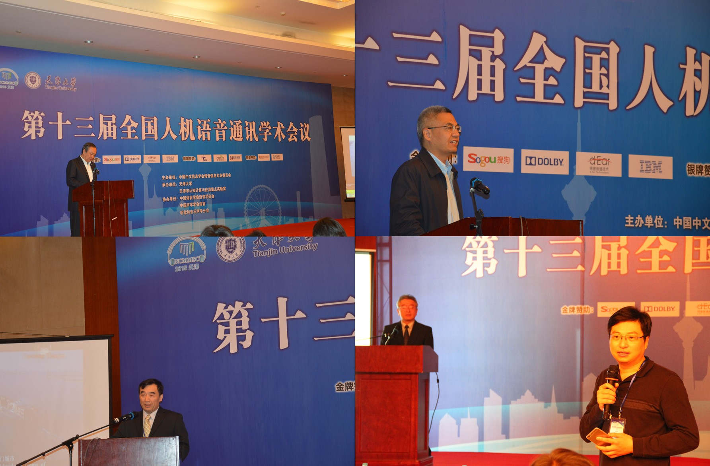
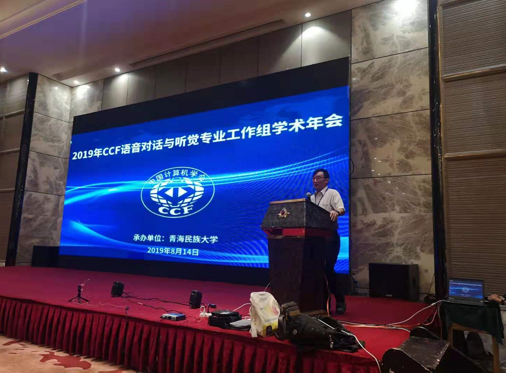

活动与风采
NCMMSC2015
 |
2015年10月25-27日，第十三届全国人机语音通讯学术会议NCMMSC2015在天津市成功召开。 该会议由中国中文信息学会主办，全国人机语音通讯学术会议、中国声学学会、中国语言学会语音学分会协办， 天津市认知计算与应用重点实验室、天津大学计算机学院、天津大学软件学院共同承办。
ISCSLP2016
2016年10月17-20日，第十届汉语口语处理国际会议（ISCSLP2016），在天津大学成功召开。 本次大会由CSLP，国际语音学会旗舰会议之一，由CSLP学会主办、 天津市认知计算与应用重点实验室、天津大学计算机学院、天津大学软件学院共同承办。
ISSP2017
 |
2017年10月16日，由国际语音通信协会（ISCA）主办、天津大学作为承办方之一的第十一届语音生成国际研讨会在津召开。
HHME2018
2018年9月14日至16日，第十四届和谐人机环境联合学术会议HHME2018在天津经济技术开发区圆满举行。 大会由第十四届人机交互学术会议CHCI2018、第十四届全国普适计算学术会议PCC2018和第八届可穿戴计算学术会议CWCC2018组成， 并同期举行中国大数据应用分析可视化论坛。
该会议由中国计算机学会主办，中国计算学会人机交互专委会、中国计算机学会普适计算专委会、 ACM SIGCHI 中国分会、中国自动化学会计算机图形学和人机交互委员会和中国图像图形学会人机交互专委会协办， 天津大学、天津经济技术开发区和天津泰凡科技有限公司联合承办。
2019 CCF语音对话与听觉专业工作组学术年会
 |
 |
2019年8月14日，第一届CCF语音与听觉专委会年会成功召开。 本次年会汇集了国内语音科研与产业的精英，具有重要的标志性意义，由青海民族大学计算机学院与天津大学智能与计算学部共同承办。
NCMMSC2019
2019年8月14-17日，第十五届全国人机语音通讯学术会议NCMMSC2019，在天津大学与青海民族大学联合承办下在西宁成功召开。 NCMMSC是国内语音届最重要的学术会议，由中国计算机学会、中国中文信息学会主办，中国声学学会、中国语言学会语音学分会、 中国电子学会协办，天津大学智能与计算学部与青海民族大学计算机学院共同承办。
2019 个性化语音产生与感知论坛
2019年11月26日,个性化语音产生与感知论坛在天津大学举行。论坛旨在推动语音产生与感知方向的发展，加强相关科研工作者间的交流。 本次个性化语音产生与感知论坛由天津大学智能与计算学部与CCF语音对话与听觉专业工作组联合举办。论坛邀请到中国社会科学院语言研究所副研究员方强； 昆山杜克大学电子与计算机工程副教授，美国杜克大学电子与计算机工程系客座研究员，武汉大学计算机学院兼职教授李明；中国科学院声学研究所研究员， 博士生导师，中国科学院语言声学与内容理解重点实验室副主任李军锋分享主题报告。
实验室内部活动
实验室学术氛围浓厚，课余活动丰富，经常举办茶话会、春游、体育比赛等， 并每年例行举办实验室年会，全体师生欢聚一堂。